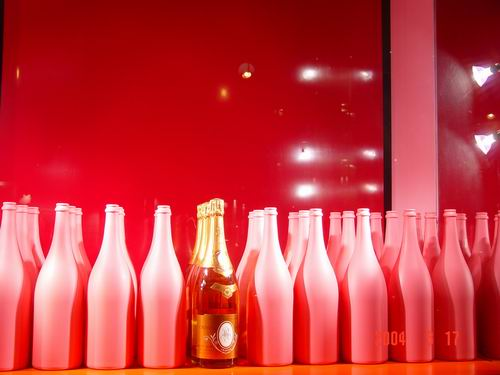
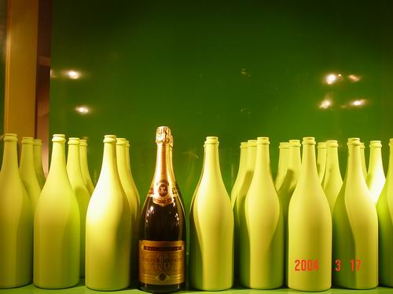
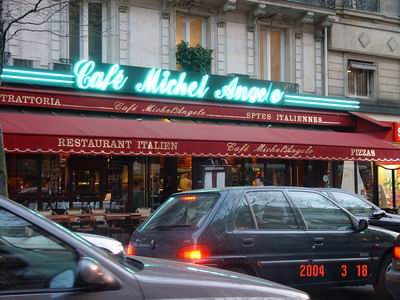
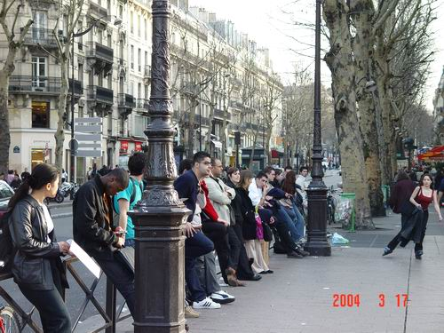
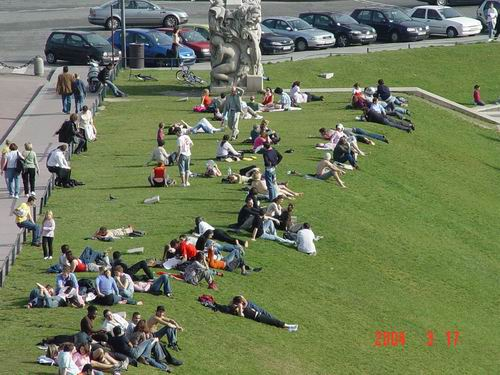

如果问一个法国人什么是最美的,他会很诚恳地告诉你是自然与和谐的,是你自己喜欢的.这是包含着个人风格的审美品味。人们将各自的艺术修养渗透在生活的层面，汇集成既遵循传统又合乎逻辑的、充满个性美感的整体。法国人似乎天生熟谙色彩艺术，对阳光与颜色有着不同的感悟。对色彩搭配运用自如。和谐是美的重要条件，在法国人的生活中尤其受到重视。
下面几副照片是我在巴黎夜晚的街道上拍摄下来的橱窗广告。巴黎的商店最迟到傍晚5、6点就会关门，但是商店里依然灯火通明，好象还在营业似的。




法国女人兼具东西方人的优点，既是天生丽质的容貌体态美，又是大方温文的气质修养美，还有品味非凡的衣着服饰美。一件简单普通的衣衫，穿在法国女人身上便会显出耐人寻味的效果，不经意的装扮之中有着恰倒好处的精妙，她们懂得如何搭配色彩，懂得色彩的艺术。千篇一律、人云亦云的样式因缺乏生命力而得不到欣赏。世上没有完全相同的两片树叶，也没有完全相同的两个人，因此，审美观念中的不同个性特点便格外受到尊重。法国人充分表现个人审美情趣和独特性。在巴黎，同具地方特色的建筑群中几乎看不到两座一模一样的房子和花园，统一的风格中突出着个性，既不重复别人也不重复自己。
思想家卢梭认为人的诞生有过两次：“一次是为了存在，另一次是为生活......第二次诞生，到了这个时候才真正地开始生活。”卢梭对人的欲念和自爱有着精辟的阐述：“所有一切欲念的本源，唯一同人一起产生而且终生不离的根本欲念，是自爱。它是原始的、内在的、先于其他一切欲念的欲念。”自爱始终是很好的，始终是符合自然秩序的。由于每个人对保存自己负有特殊责任。法兰西的民族精神就是尊重自己和尊重他人。作为一个人，既有人体之美，也有精神之美。


咖啡店外休闲的男女
巴黎人早晨醒来的第一件事情是喝咖啡，酒店早餐食品里，必然会提供咖啡和羊角面包（CROISSANT），这是巴黎人早餐的主食。咖啡与巴黎人、巴黎文化息息息相关。人们说，如果想要了解巴黎，就要学会坐坐咖啡厅。巴黎有12，000家大大小小的咖啡厅，散布在每条街道，每个街角。咖啡厅是巴黎的脉搏，启动着每个新的一天。咖啡厅又是聚会交谈最理想的场合。一杯小小的咖啡把历史和世俗生活以及未来世界紧密相连。
有关咖啡的文献记载：8世纪一个年轻的牧羊人KALDI和他的羊最现发现了咖啡。一天，正在也门高原上放牧的KALDI忽然看到，他的羊群吃了那些小灌木的红浆果后都奇怪地蹦蹦跳跳起来。一只只山羊摇头晃脑摆动四蹄，兴奋得一刻不停直到黎明。此后，人们试着把那些果实的核煮成饮料，喝过的人都获得一种神气的活力，便把它起名为咖啡（KAWAH）。意识是力量和激情。
咖啡虽然来自亚洲，却完全被西方人认同了，以至于它的原始产地既不是欧洲也不是美洲这个事实不仅被忽视，而且显得微不足道。几百年来，咖啡被巴黎所接受，并且形成巴黎的咖啡文化。咖啡座从室内延伸到街道旁，贴沿着行人匆匆来往的脚步，坐在咖啡座位上，欣赏眼前的一切，是一种视觉和思想的独特享受。行人中那些不同的面貌、服饰和神态蕴涵着无尽的情感和故事。



No Responses to “巴黎，难以言尽的魅力（二）”
Leave A Reply
存档只读，评论已关闭。